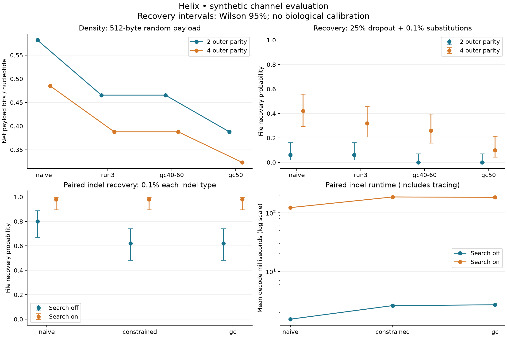

COMPUTER SCIENCE, MEET BIOLOGY
Small letters.
Extraordinary
possibilities.
What if a file could be written in the alphabet of life? Explore how Helix turns everyday data into DNA sequences—and finds a way back.
Follow a file’s journey ↓No biology degree required. Just a little curiosity.
A visual metaphor for DNA · drag to rotate
01 — FOLLOW THE DATA
One message. Four steps. A different way to store it.
Your words,
in another alphabet.
Up to 24 UTF-8 bytes. Everything stays in your browser.
Damage and recovery are an illustrative animation. The full Python decoder runs in the repository.
THE INTERESTING PART
Not every string
makes a good strand.
Long repeats can make DNA difficult to write or read. Helix changes the encoding to limit repeats, and can also balance G and C letters.
Same bytes: eight zero bytes · different encodings
*Mapping only. Real storage also includes identifiers, checks and repair data. This browser example enforces a maximum run of three in constrained mode.
02 — THE BIG QUESTION
How much extra data
is peace of mind?
Helix adds repair information, a little like the extra clues that let a scratched QR code still work. More protection takes up more room. The project measures that tradeoff.
simulated file-recovery trials
across 144 scenarios
successful recoveries
in clean-channel trials
These are simulated DNA strings and errors. No physical DNA was synthesized. The results describe this implementation under its stated test conditions.
03 — FOLLOW THE EVIDENCE
Curiosity, backed
by experiments.
Try the demo, inspect the algorithms, or explore the results. Every recovery ends with an exact file check.
Explore the repository ↗Open the actual benchmark charts +
